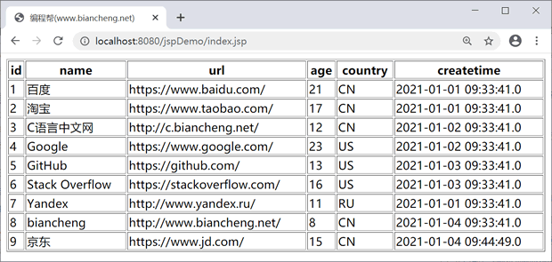

首页 > JSTL > JSTL SQL标签
<sql:dateParam>标签
JSTL <sql:dateParam> 标签用来提供日期和时间的动态值，通常与 <sql:update> 和 <sql:query> 标签结合使用。
运行结果如下：
语法
JSP <sql:dateParam> 标签的语法如下：<sql:dataParam value="value" type="DATE|TIME|TIMESTAMP"/>其中：
- value：设置的日期参数
- type：设置日期数据种类，有 DATE（只有日期）、TIME（只有时间）、TIMESTAMP（日期和时间）
示例
下面为 <sql:dateParam> 标签的简单示例。
<%@ page language="java" contentType="text/html; charset=UTF-8"
pageEncoding="UTF-8"%>
<%@ page import="java.sql.Timestamp"%>
<%@ page import="javax.servlet.http.*,javax.servlet.*"%>
<%@ taglib uri="http://java.sun.com/jsp/jstl/core" prefix="c"%>
<%@ taglib uri="http://java.sun.com/jsp/jstl/sql" prefix="sql"%>
<!DOCTYPE html>
<html>
<head>
<title>编程帮(www.biancheng.net)</title>
</head>
<body>
<sql:setDataSource var="snapshot" driver="com.mysql.jdbc.Driver"
url="jdbc:mysql://localhost:3306/test?useUnicode=true&characterEncoding=utf-8"
user="root" password="root" />
<%
Timestamp create = new Timestamp(System.currentTimeMillis());
%>
<%-- 插入数据 --%>
<sql:update dataSource="${snapshot}">
INSERT INTO website (NAME,url,age,country,createtime) VALUES ('京东', 'https://www.jd.com/', 15, 'CN',?);
<sql:dateParam value="<%=create%>" type="TIMESTAMP" />
</sql:update>
<%-- 查询数据 --%>
<sql:query dataSource="${snapshot}" var="result">
SELECT * from website;
</sql:query>
<table border="1" width="100%">
<tr>
<th>id</th>
<th>name</th>
<th>url<a/th>
<th>age</th>
<th>country</th>
<th>createtime</th>
</tr>
<c:forEach var="row" items="${result.rows}">
<tr>
<td><c:out value="${row.id}" /></td>
<td><c:out value="${row.name}" /></td>
<td><c:out value="${row.url}" /></td>
<td><c:out value="${row.age}" /></td>
<td><c:out value="${row.country}" /></td>
<td><c:out value="${row.createtime}" /></td>
</tr>
</c:forEach>
</table>
</body>
</html>
运行结果如下：

关注公众号「站长严长生」，在手机上阅读所有教程，随时随地都能学习。内含一款搜索神器，免费下载全网书籍和视频。

微信扫码关注公众号